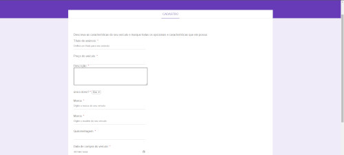
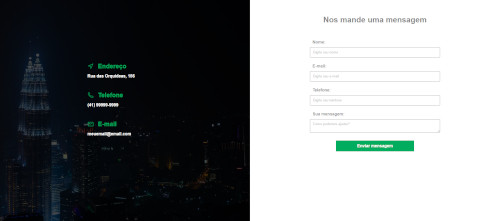
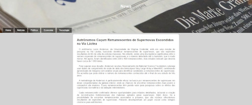
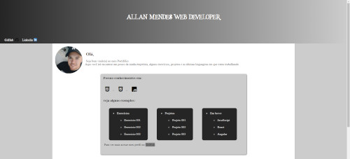

Olá,
Seja bem vindo(a) ao meu Portifólio. Aqui você irá encontrar um pouco da minha trajetória, alguns exercícios, projetos e as últimas linguagens em que estou trabalhando .
Seja bem vindo(a) ao meu Portifólio. Aqui você irá encontrar um pouco da minha trajetória, alguns exercícios, projetos e as últimas linguagens em que estou trabalhando .
Esse projeto utiliza link em forma de botões que ao selecionados mostram dentro do iframe, para promover minhas redes sociais, Acesse.
Trabalhando com formulários, essa página simula uma ficha de cadastro para venda de veículo. Acesse a página.
Mais formulários. Este projeto consiste em criar uma página de contato, abordando o posicionamento de imagens, opacidade e outros, criando uma experiência atraente. Ir para página.
Projeto focado na implementação de media queries para tornar o site responsivo. Acesse.
Meu projeto é uma replica do Orkut, a icônica rede social que marcou a era da internet nos anos 2000. Esta réplica recria fielmente sua aparência. Ir para página
O projeto login funciona em diferentes telas, nesse projeto tive a oportunidade de aprender um pouco mais sobre media query. Acesse.
O meu primeiro site é um projeto pessoal que representa o início da minha jornada na criação e desenvolvimento. Acesse.
